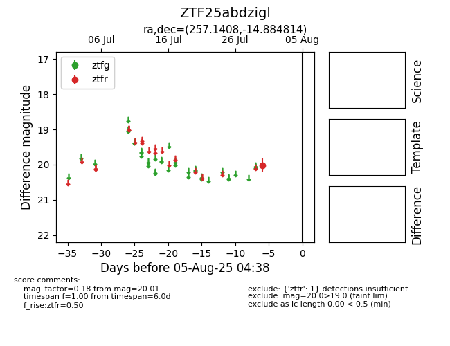

Target ZTF25abdzigl at 2025-08-05 04:38, see:
FINK: fink-portal.org/ZTF25abdzigl
Lasair: lasair-ztf.lsst.ac.uk/objects/ZTF25abdzigl
ALeRCE: alerce.online/object/ZTF25abdzigl
alt names
ZTF25abdzigl (ztf,fink)
coordinates:
equatorial (ra, dec) = (257.1408,-14.88481)
galactic (l, b) = (7.1886,+14.84008)
photometry
last ztfr=20.01
1 ztfr detections
